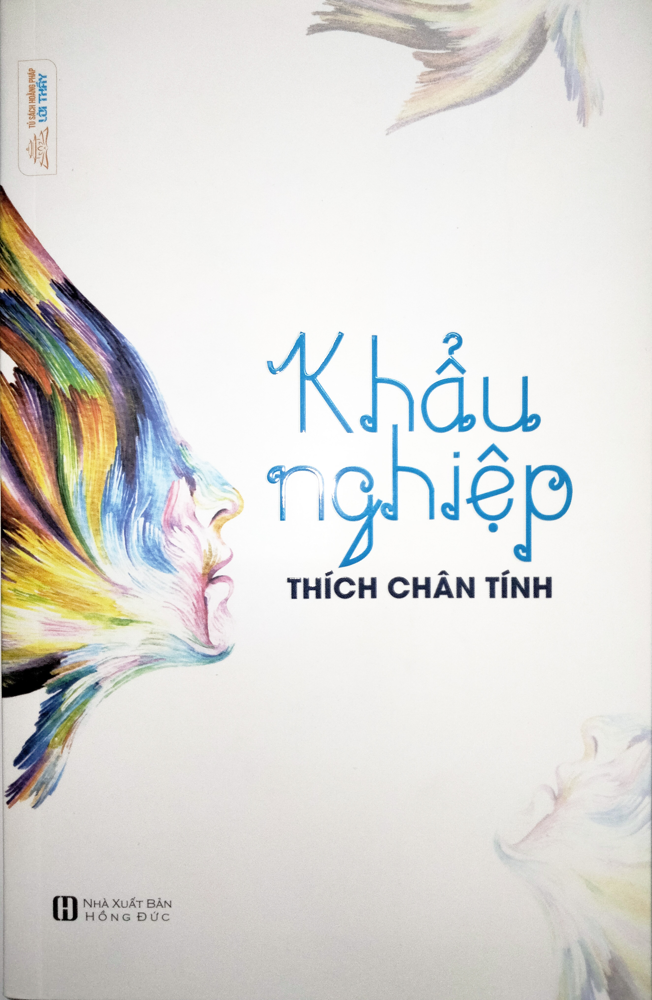

Lời Tựa
Họa Từ Miệng
Nhìn Người Hay Nhìn Mình?
Mạng Ảo Nghiệp Thật
Nói Rõ Chuyên Người Nên Hay Không?
Vấn Đề Tịnh Thất Bồng Lai
Ai Đúng Ai Sai?
Chim Cú Và Chim Gáy
Thị Phi
Xá Lợi Phất Rộng Lượng Khoan Dung
Một Câu Nhịn Chín Câu Lành
Bão Ngoài Bão Trong
Tùy Duyên Giáo Hóa
Tỳ Kheo La Đà
Trả Thù Hay Tha Thứ
Soi Sáng
Nguyện Tự Sửa Mình
Người Hiền Kẻ Ngu
Nhìn Lại Bản Thân
Trai Tăng Tại Chùa
Quân Tử Và Tiểu Nhân
Hai Loại Hội Chúng
Mây Mưa
Giới Vọng Ngữ
Mấy Lời Tâm Huyết